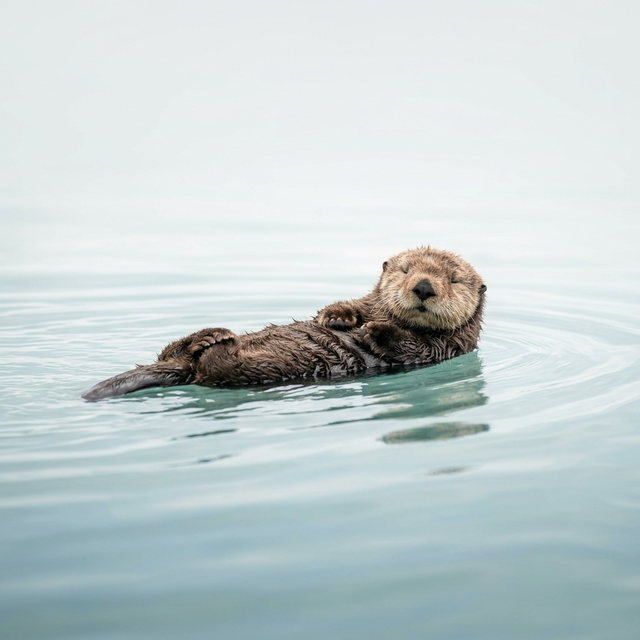

A creative professional who loves blending elegant design with clean code. Welcome to my personal playground inspired by minimalist aesthetics and my favorite animal—the sea otter.

Current Time
2026-03-03T10:35:00+08:00
Inspired by the calmness of nature and the ingenuity of sea otters, I strive to design web experiences that are not only functional but gracefully adaptable. Much like a sea otter cracking open a shell with a stone, I believe in utilizing the right tools to uncover the best solutions.
I focus heavily on typography, whitespace, and a polished user interface to deliver a premium atmosphere.
Minimalist approach referencing premium blog templates.
Live synchronized clock based on user locale.